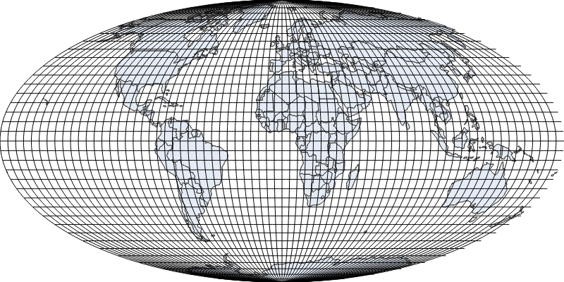
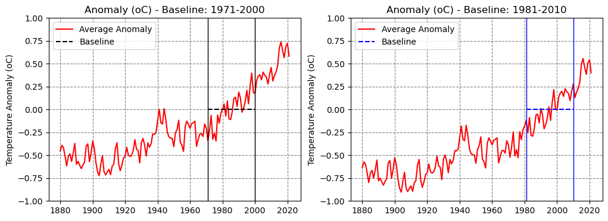
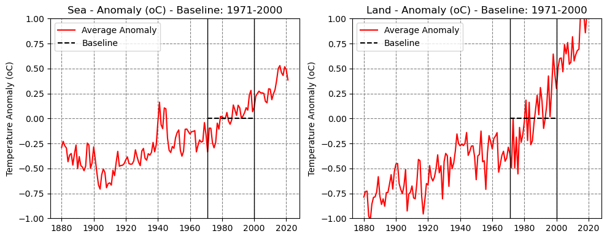
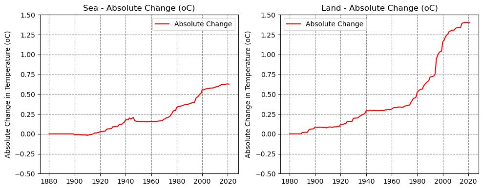

I was always a bit annoyed by the arbitrary choice of a baseline to compute the average temperature anomaly. Of course, I know that the plot itself doesn’t change, and a different baseline only shifts the vertical axis, since the zero depends on the time span used as baseline.
Still, not everyone can see through it easily. I always thought it was a disservice to people trying to learn more about global warming since it burdens the reader.
Even worse, the NOAA’s website makes it very confusing even for seasoned professionals when it mentions, literally, four different spans to refer to the same data!
In the page corresponding to the data we’re using here, the GHCN Gridded Products, we see:
1971 to 2000 in Data Access, the one the data is actually adjusted to
Moreover, given the very nature of the dataset, NOAA recommends in the Note section:
“These gridded data sets were developed to produce the most accurate time series possible. However, this required that months and grid boxes be treated independently through time. The use of these data sets is most appropriate for analyzing the change in temperature within a particular grid box, or set of grid boxes, over a span of years.”
Tip
It makes sense, since different locations exhibit quite different weather and temperature patterns, and worse yet, they are being impacted by global warming differently over time.
The only reasonable way to compare them, and aggregate them, is to try to find their own baselines.
Tip
The baseline represents the typical temperature pattern in a given location before it was modified/disturbed by the effects of global warming.
Regardless of the time span used to compute the temperature anomalies, it should be possible to find out which (relative) temperature was typical of a given location for a certain period of time.
Once this temperature level was established, we can look for change points corresponding to a regime change in the temperature.
The (relative) temperature in the changed regime, when compared to the baseline (the first observed regime) gives us an indication of the absolute change in that region.
That’s our goal here!
Warning
DISCLAIMER: I am NOT a meteorologist or climate scientist! I am using the tools I have at my disposal, as a data scientist and developer, to try and understand better the dynamics of global warming, and, at the same time, address a pet peeve that has been bugging me for years!
For this reason, I am making all the code freely available, and I invite you to try it yourself using different parameters and assumptions if you wish.
Spoiler alert: I tried many different parameters for change point detection and interpolation algorithms, and the results almost didn’t budge.
2 Data
We’re using data from NOAA’s National Centers for Environmental Information (NCEI).
The data, Land and Ocean Temperature Anomalies grid file using GHCN Version 5.0.0, shows temperature anomalies with respect to the 1971-2000 average, in degrees Celsius, for each 5° by 5° grid box, and it can be directly accessed here.
import numpy as npimport netCDF4 as ncdef noaa_temperatures(fname, yearly=True, start=1971, span=30, stat='mean', grid_size=5):# Reads NetCDF file ds = nc.Dataset(fname)# Anomaly data (z) anom = ds['anom'][:].data# Value used to replace missing values nanval = ds['anom'].missing_value# Original shape is (n_years, 1, 36, 72) gridded = anom.squeeze() gridded[gridded == nanval] = np.nan stat ='mean' funcs = {'mean': np.mean, 'max': np.max, 'min': np.min}# Gets the number of full years in the file n_years = gridded.shape[0]//12 end = start + span -1if (start !=1971) or (end !=2000): polygons = surface_polygons(grid_size) surface_perc = surface_area(polygons, perc=True)# Computes weighted average using surface area of grid boxes adjustment = np.mean(surface_stat(gridded[(start-1880)*12:(end-1880+1)*12], surface_perc))# Adjusts baseline gridded = gridded - adjustment# Computes the average over each year griddedy = np.array([funcs[stat](gridded[i*12:(i+1)*12], axis=0) for i inrange(n_years)])# NetCDF has latitudes from -87.5 to 87.5 (it uses the centers of the # grid boxes) but we need to flip it upside down to use in Plotly griddedy = griddedy[:, ::-1]# NetCDF has longitudes from 0 to 360, but we need to rearrange it from # -180 to 180 to use in Plotly, so we concatenate the last 36 columns # (180 to 360 = -180 to 0) to the first 36 columns (0 to 180) griddedy = np.concatenate([griddedy[:, :, 36:], griddedy[:, :, :36]], axis=2)return griddedy if yearly else gridded
The download() function retrieves the data from NOAA, and the noaa_temperatures() returns a 3D Numpy array containing the yearly averages for each grid box (36 x 72 boxes). It is possible to adjust the baseline for the tempeature anomalies from the default 1971-2000 to any other span of years.
Important
The noaa_temperatures() function uses np.mean (instead of np.nanmean) on purpose! If data from any month in a given year is missing, the whole year is deemed missing, as the average would be biased otherwise.
The dataset covers a span of 142 years, from 1880 to 2021.
If you took a peek at the noaa_temperatures() function you may have noticed that the baseline adjustment uses the surface area of the grid boxes to compute a weighted average of the temperatures.
This is an important step, and the rationale behind the choice of projection for visualization, as we’ll see in the next section.
3 Grid and Projections
The default projection is the Mollweide projection because it is an equal-area projection, that is, it preserves the relative sizes of the grid boxes. A 5° by 5° grid box at the Equator line is approximately 23 times larger than a 5° by 5° grid box at one of the poles, and this should be taken into account while averaging anomalies across the globe.

Figure 1: Mollweide Projection
The functions below compute the percentage of the globe’s surface contained in each and every 5-by-5 degrees grid box:
The same result can be achieve using a simple cosine function over the latitudes at the center of each grid box, referred by NOAA as cosine weighting:
lat = np.linspace(-87.5, 87.5, 36)cosines = np.cos(lat/180*np.pi)cosines = cosines/(72*cosines.sum())
Text(0.5, 1.0, 'Surface area of a 5-by-5 degrees grid box')
4 Temperature Anomalies
Now we can compute the average global anomaly weighted by the surface area of the grid boxes, not counting missing data.
Code
def surface_stat(data, surface_perc, stat='mean'):# Average anomaly weighted by surface area, not counting missing data data_mean = np.array([np.nansum(ev * surface_perc) / (~np.isnan(ev) * surface_perc).sum() for ev in data])if stat =='mean':return data_meanelif stat =='std': data_var = [np.nansum((ev - ev_mean) **2* surface_perc) / (~np.isnan(ev) * surface_perc).sum() for ev, ev_mean inzip(data, data_mean)]return np.sqrt(data_var)
These are the average global anomalies with respect to the 1971-2000 average:
Note: if you compute the average from 1971 to 2000 (avg_temp[91:120].mean()) it won’t result in exactly zero as one would expect, but -0.0518 degrees instead. Unfortunately, I couldn’t figure out why this is the case in NOAA’s data.
avg_temp[91:120].mean()
-0.05189353308685528
Apart from this minor difference, the choice of window for taking the average against which the global anomaly is computed is arbitrary. As mentioned in the motivation, this is my pet peeve because it makes particularly difficult to make a point if the baseline is constantly changing.
As you can see in the plots below, changing from 1971-2000 to 1981-2010, for example, only changes the y axis: the whole plot shifts down about 0.18 degrees, but any difference between two points in the plot remain exactly the same.
Important
So, it doesn’t matter which baseline is used, the difference in global temperature between 2021 and 1880 is the same: 1.02 degrees.
Tip
Nonetheless, it would be very helpful to have an absolute measure of the changes in temperature over time. And that’s what we’re trying to accomplish here.

However, the averages do not tell the whole story. It is much more interesting to look at the temperature anomalies recorded on each and every grid box.
The plot above isn’t interactive, but if we look at individual grid boxes, we’ll see that many of them have many missing data points. That’s totally expected, as data wasn’t collected in remote places in the late 19th or early 20th centuries.
5 Time Series
Let’s take at look at a grid box close to Antarctica. Its measurements started in the late 1950s, and there are some years missing.
The first step we need to take is to impute some of the missing data. We’ll use some simple linear interpolation, but only in those cases where the gap in the data isn’t too long.
This is the Numpy array corresponding to the plot above:
Apart from the first 77 years, where there were no measurements whatsoever, there are only five missing measurements: three of those are single years, and the other two are consecutive years.
We obviously cannot do anything about the first 77 years, but we can use linear interpolation to fill in the other five missing points. The function below, bounds(), returns the first and last indices of a Numpy array that contain the longest sequence of data points that can be used as base for the imputation.
Code
def bounds(data, max_contiguous_na=5):# Returns the start and end indices of the longest# valid sequence, that is, containing up to a given# number of contiguous missing points# Gets the indices of the non-null points idxs = np.arange(len(data))[~np.isnan(data)] max_size =0 max_ini =0 size =1 ini =0# Calculates the size of the gaps of missing data gaps = np.diff(idxs) -1for i, v inenumerate(gaps):# If there's no gap, the size of valid data is increased by 1if v ==0: size +=1# If that's the long sequence of values containing tolerable # gaps then updates max infoif size > max_size: max_size = size max_ini = ini# If the gaps is larger than tolerable, resets size and initif v > max_contiguous_na: ini = i +1 size =1# If the gap is tolerable, adds one to the size# (that means the next idx)elif v >0: size +=1# Computes the end of the longest sequence max_end = max_ini + max_size# Returns the start and end indices of the longest sequence ini, end = idxs[max_ini], idxs[max_end-1] +1return ini, end
Let’s create three dummy arrays to illustrate how the function above works.
That was an easy case: there’s only a gap of three consecutive data points (thus below the default threshold of five), so we can use the whole sequence (start=0, end=15) and impute those three values.
The second sequence has six consecutive missing points, so they won’t be imputed, and we’ll only consider the sequence from its 9th data point (index=8).
The third example is a bit more peculiar, since it has six consecutive missing points towards its end. Therefore, the longest sequence we can use actually ends at the 9th data point (index=8). This is a rather rare occurrence, since most grid boxes have missing data points in earlier years only.
In our real example, we can use the sequence from 1957 up to 2021:
ini, end = bounds(signal, max_contiguous_na=5)ini, end, signal[ini:end]
The function below, fill_values(), uses Scikit-Learn’s interp1d() to impute the missing values in the longest sequence identified by the bounds() function:
Code
from scipy import interpolatedef fill_values(data, max_contiguous_na=5, periods_for_extrapolation=5, method='slinear'): time = np.arange(len(data)) signal = data.copy()# If there are no valid data points, there's nothing to fillif np.all(np.isnan(signal)):return signalelif np.any(np.isnan(signal)):# Gets minimum and maximum values minv, maxv = np.nanmin(signal), np.nanmax(signal)# Uses only the values in the longest sequence containing no more than# a given number of contiguous missing points (5) ini, end = bounds(data, max_contiguous_na) signal = signal[ini:end]# Creates a filler function to interpolate the missing values over timetry: filler_func = interpolate.interp1d(time[ini:end][~np.isnan(signal)], signal[~np.isnan(signal)], kind=method)exceptValueError:return signal# Passes the time as argument to the filler function filled = filler_func(time[ini:end])# Caps interpolated values at actually observed min and max values filled = np.minimum(filled, maxv) filled = np.maximum(filled, minv)if ini >0:# Rebuilds the full sized array, if the longest sequence # doesn't start at zero filled = np.concatenate([[np.nan] * ini, filled])if end <len(data):# If the longest sequence ends before the last time period, # extrapolates the last missing values using the average of# a given number of periods avg = filled[-periods_for_extrapolation:].mean() filled = np.concatenate([filled, np.nan_to_num(data[end:].copy(), nan=avg)])return filledelse:return signal
We can apply the fill_values() function to our real example:
Excellent, there are no missing points in this time series anymore.
Now, we can use it to perform change point detection (CPD), our next step.
7 Change Point Detection (CPD)
We’re using the ruptures package to detect change points in the series of temperature anomalies corresponding to each grid box.
The change_points() function detects change points using linearly penalized segmentation (Pelt), having l1 as the model, and a penalty of three.
Code
#!pip install rupturesimport ruptures as rptfrom ruptures.exceptions import BadSegmentationParametersdef change_points(data, model='l1', pen=3): signal = data.copy()# If there are no valid data points, returns one regime# that starts at 0, ends at the full length, and is nanif np.all(np.isnan(signal)):return np.array([0, len(signal)]), np.array([np.nan])# Gets the index of the first non-missing data ini = np.argmax(~np.isnan(signal))# Uses the Pelt method of the ruptures package# to find regime changes/breaks algo = rpt.Pelt(model=model).fit(signal[ini:])try: breaks = algo.predict(pen=pen)except BadSegmentationParameters:# If no changes/breaks were found, assumes# the regime goes up to the end of the series breaks = [len(signal)-ini]# Gets the indices of the breaks and breaks = np.array([0, *breaks]) + ini# Computes the average of each regime averages = np.array([signal[breaks[i-1]:breaks[i]].mean() for i inrange(1, len(breaks))])# First regime must be at least 10 years long i = np.argmax(np.diff(breaks) >=10)return breaks[i:], averages[i:]
For our real example, we feed the filled time series for the change_points() function, and that’s the result:
It identified one change point,happening in 2007 (index 127). From the start of the series, in 1957 (index 77), up until 2007, the average temperature anomaly was -0.236 degrees. From 2008 on, the new regime has an average temperature anomaly of 0.616 degrees.
We can use this information to construct a time series representing these regimes, and that’s what the function below, change_evolution(), does:
Code
def change_evolution(changes, offset=True): breaks, averages = changes# Creates a full series using the break points and using the average# of each regime avg_series = np.concatenate([[averages[i]] * (breaks[i +1] - breaks[i]) for i inrange(len(averages))])# If offset, shifts the starting point to zeroif offset: avg_series -= avg_series[0]# If the first break is other than zero, concatenates empty data at # the start to make the array full sizeif breaks[0] >0: avg_series = np.concatenate([[np.nan] * breaks[0], avg_series])return avg_series
We can also set the offset argument to True to consider the first regime as the baseline, thus computing temperatures with respect to its average instead:
In the example above, the second regime exhibits a temperature 0.85 degrees higher than the first, baseline, regime. We’ll use this approach to compute the absolute change in temperature with respect to the first observed regime (in the example above, the regime between 1957 and 2007).
The quality of the estimated absolute change is limited by the availability of data in earlier years, though. In our example, it could have been the case that, before 1957, there was yet another regime with a possibly lower temperature.
If that were the case, it means that the actual change may have be even higher. Conversely, if that unobserved regime had a higher temperature, the actual change would be lower than our estimation. Given that the latter case is rarely observed in practice, it’s rather safe to assume the overall estimation of the absolute change in temperature is actually a lower bound.
Next, we can create two other functions, series_changes() and series_evolution(), to apply the change_points() and change_evolution() functions, respectively, to the time series of each and every grid box.
Code
def series_changes(filled, model='l1', pen=3):# Applies the change_points function over every filled series changes = np.apply_along_axis(func1d=lambda s: change_points(s, model, pen), arr=filled.reshape(filled.shape[0], -1).T, axis=1) changes = changes.reshape(*filled.shape[1:], 2)return changes
Code
def series_evolution(gridded, changes, offset=True, keep_missing=True):# Applies the change_evolution function over every grid box missing = np.isnan(gridded.reshape(gridded.shape[0], -1).T) evolution = np.apply_along_axis(func1d=lambda s: change_evolution(s, offset), arr=changes.reshape(-1, 2), axis=1)if keep_missing: evolution[missing] = np.nan evolution = evolution.T.reshape(gridded.shape)return evolution
Since we have time series of the estimated regimes, we can use them to compute a global average of the absolute change in temperature weighted by the surface area of each grid box.
Many regions in the northern hemisphere show regimes that are 3 degrees Celsius or more above their corresponding (observed) first regime since 1880.
To explore the evolution over time, simply select Absolute in the interactive plot in the main page of Heating Planet.
Tip
While exploring the interactive plot, pay attention to how some areas heat up earlier than others, and how warmer regions spread over time.
Did you notice that the landmasses are getting warmer than the oceans? Let’s dig deeper into it!
9 Over Land and Sea
First, we need to define a mask for our grid cells, a Numpy array indicating those grid cells which have more than 50% of its area as landmass (one indicates land, zero indicates sea). I’ve prepared this array and saved it in the land.npy file.
Now we can make deep copies of the anomalies (griddedy) and use the land_mask variable to mask either landmasses or oceans. This allows us to compute the average global anomalies over land and sea, separately, using the surface_stat function once again. Let’s see what are the current figures for 2021:
The average global temperature anomaly over land is roughly 1° Celsius while the seas warmed roughly 0.3° Celsius. We can see the evolution of these figures over time in the plots below:

Clearly, there’s a much steeper trend in the rise of temperature over landmasses.
What about the absolute change in temperature?
9.2 Absolute Changes
We can apply the same mask to the absolute changes we’ve previously computed (regimes) and, once again, compute the global averages:
In 2021, the last data point in our series, landmasses are 1.4° Celsius warmer than they were in 1880 while the oceans are roughly 0.6° Celsius warmer. We can see the evolution of these figures over time in the plots below:

It’s particularly striking the rise in temperature over land in the 1980s, 1990s, and early 2000s. In the 1990s, especially, we see both land and sea warming really fast.
10 Saving to File
The interactive plot in the main page uses two .dat files (zvalues and evolution) containing the raw data from NOAA, the estimated regimes we discussed above, and the imputed data points.
The code below generates these two files.
# filled series -> arrayn_years = griddedy.shape[0]filled_locs, filled_years = np.where(np.isnan(griddedy.reshape(n_years, -1).T) &~np.isnan(filled.reshape(n_years, -1).T))filled_vals = filled.reshape(n_years, -1).T[filled_locs, filled_years]filled_arrays = np.array([filled_locs, filled_years, filled_vals])# changes -> arrayidxs_breaks = np.cumsum(list(map(len, changes[:, :, 0].reshape(-1))))vals_breaks = np.array([v for s in changes[:, :, 0].reshape(-1, ) for v in s])vals_avgs = np.array([v for s in changes[:, :, 1].reshape(-1, ) for v in np.concatenate([[np.nan], s])])chg_arrays = np.zeros(shape=(3, vals_breaks.shape[0])) * np.nanchg_arrays[0, :idxs_breaks.shape[0]] = idxs_breakschg_arrays[1] = vals_breakschg_arrays[2] = vals_avgssave2dat([griddedy, regimes], 'zvalues', swap=False, nan=-999)save2dat([filled_arrays, chg_arrays], 'evolution', swap=False)